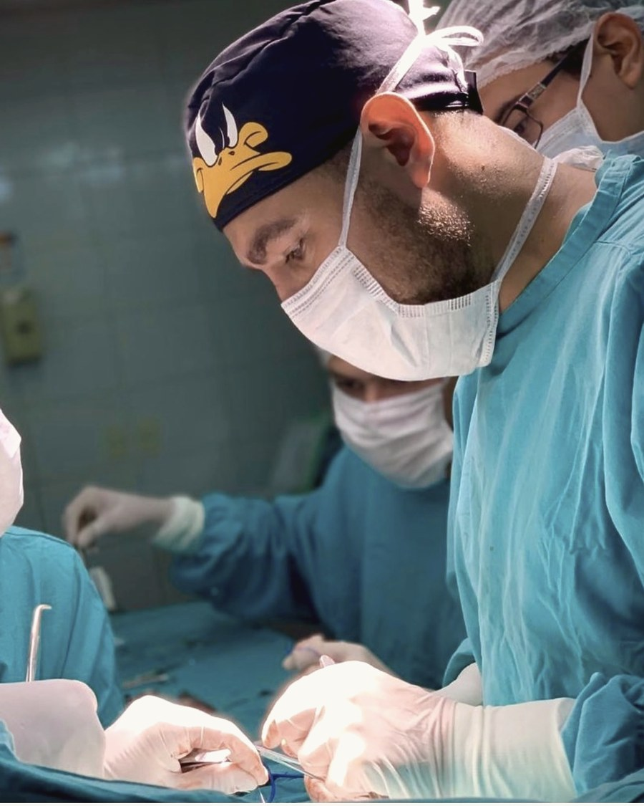

Cuidado quirúrgico infantil, con calma y con cariño.
Sé que llevar a un hijo o hija a una consulta de cirugía genera nervios — para el chico y para los papás. Por eso cuido los tiempos, explico cada paso con calma y acompaño a las familias de Mendoza en el diagnóstico y tratamiento de las patologías frecuentes en la infancia, con especial dedicación a la coloproctología pediátrica.

Elegí una opción para ver el detalle.
Qué es: una pequeña abertura en la pared abdominal, a la altura del ombligo, que suele estar presente desde bebés.
Cómo se trata: en la mayoría de los casos, solo se observa — se cierra sola antes de los 4-5 años. Si persiste después, se evalúa una cirugía ambulatoria simple.
Cuándo consultar de urgencia: si la hernia se pone dura, dolorosa, cambia de color o no se puede volver a su lugar con una presión suave.
Leer la nota completa →Qué es: la dificultad para retraer completamente el prepucio, algo esperable en niños pequeños.
Cómo se trata: muchos casos se resuelven solos con el crecimiento; otros mejoran con una crema indicada por el especialista. La cirugía se reserva para los casos que no responden a eso.
Cuándo consultar de urgencia: si hay dificultad para orinar, hinchazón marcada o dolor intenso.
Leer la nota completa →Qué es: protrusión de contenido abdominal a través del conducto inguinal (la ingle), más frecuente en varones.
Cómo se trata: a diferencia de la hernia umbilical, no se resuelve sola — una vez diagnosticada, se indica cirugía programada para evitar complicaciones.
Cuándo consultar de urgencia: si el bulto se pone duro, doloroso, cambia de color, o no puede volver a su lugar con una presión suave.
Leer la nota completa →Qué es: hinchazón o dilatación de los vasos alrededor del ano; en niños son mucho menos frecuentes que en adultos y suelen asociarse a constipación.
Cómo se trata: se aborda primero la constipación de base (dieta, hidratación) junto con medidas locales indicadas en la consulta.
Cuándo consultar de urgencia: ante sangrado abundante o dolor que no mejora.
Leer la nota completa →Qué es: una pequeña herida en el borde del ano, habitualmente producida por el paso de materia fecal dura durante la constipación.
Cómo se trata: manejo de la constipación de base, medidas locales y, en casos seleccionados, tratamiento específico indicado por el especialista.
Cuándo consultar de urgencia: sangrado visible al evacuar o dolor intenso persistente.
Leer la nota completa →Qué es: protrusión de contenido abdominal a través de una debilidad en la pared, frecuentemente en el sitio de una cirugía previa.
Cómo se trata: se evalúan tamaño y síntomas; el tratamiento definitivo suele ser quirúrgico.
Cuándo consultar de urgencia: dolor intenso, cambio de color de la piel sobre la zona, o si no puede reducirse.
Qué es: uno o ambos testículos no descendieron completamente al escroto durante el desarrollo.
Cómo se trata: se controla en los primeros meses de vida; si no desciende espontáneamente, se indica cirugía (orquidopexia), habitualmente antes del año y medio.
Cuándo consultar de urgencia: dolor testicular súbito e intenso (podría tratarse de una torsión, urgencia quirúrgica).
Qué es: acumulación de líquido alrededor del testículo que produce aumento de tamaño del escroto.
Cómo se trata: en bebés suele resolverse solo antes del año; si persiste o es muy grande, se evalúa cirugía.
Cuándo consultar de urgencia: aumento brusco de tamaño acompañado de dolor.
Qué es: acumulación de líquido a lo largo del cordón espermático, una variante del hidrocele.
Cómo se trata: seguimiento clínico; cirugía si no se resuelve o genera molestias.
Cuándo consultar de urgencia: dolor o crecimiento rápido.
Qué es: una pequeña formación quística junto al testículo, generalmente benigna.
Cómo se trata: seguimiento clínico; cirugía solo si genera síntomas.
Cuándo consultar de urgencia: dolor testicular agudo.
Qué es: un remanente embrionario entre la vejiga y el ombligo que puede formar un quiste.
Cómo se trata: si es sintomático o se infecta, tratamiento quirúrgico.
Cuándo consultar de urgencia: dolor abdominal bajo, enrojecimiento o secreción por el ombligo, o fiebre.
Qué es: una formación quística en el ovario, muchas veces hallazgo incidental y benigno en niñas.
Cómo se trata: seguimiento con ecografías; cirugía en quistes grandes, persistentes o con signos de complicación.
Cuándo consultar de urgencia: dolor abdominal súbito e intenso (posible torsión ovárica).
Qué es: una comunicación anómala entre el recto o el ano y la piel del periné, congénita o adquirida.
Cómo se trata: evaluación quirúrgica especializada según el tipo y trayecto.
Cuándo consultar de urgencia: signos de infección: dolor, fiebre o secreción purulenta.
Qué es: un grupo de anomalías congénitas del desarrollo del ano y el recto, detectadas generalmente al nacer.
Cómo se trata: requiere manejo quirúrgico especializado, con seguimiento a largo plazo del control de esfínteres.
Seguimiento: el diagnóstico y manejo inicial se hace en la etapa neonatal, con control continuo por coloproctología pediátrica.
Leer la nota completa →Qué es: ausencia congénita de células nerviosas en un segmento del intestino grueso, que dificulta el tránsito intestinal.
Cómo se trata: diagnóstico con estudios específicos y manejo quirúrgico (resección del segmento afectado).
Cuándo consultar de urgencia: distensión abdominal marcada, vómitos o fiebre (posible complicación).
Leer la nota completa →Qué es: dificultad o disminución en la frecuencia de las evacuaciones, muy frecuente en la infancia.
Cómo se trata: en la mayoría de los casos, con medidas dietéticas, hidratación y, si hace falta, tratamiento indicado por el especialista.
Cuándo consultar: si es persistente, genera dolor, hay sangrado, o no mejora con medidas simples.
Qué es: una cavidad o trayecto que se forma en la piel de la zona sacrococcígea, frecuente en adolescentes.
Cómo se trata: si no está infectado, a veces solo requiere cuidados locales; si se infecta o es recurrente, tratamiento quirúrgico.
Cuándo consultar de urgencia: dolor, enrojecimiento, secreción o fiebre.
Qué es: pasaje de contenido del estómago hacia el esófago, muy frecuente en bebés y generalmente fisiológico.
Cómo se trata: la mayoría mejora sola con el crecimiento; ayudan medidas posturales y de alimentación. La cirugía se reserva para casos seleccionados que no responden a tratamiento médico.
Cuándo consultar de urgencia: rechazo del alimento, dificultad para crecer, vómitos con sangre, o dificultad respiratoria asociada.
Qué es: presencia de cálculos en la vesícula biliar; menos frecuente en niños que en adultos, pero posible.
Cómo se trata: seguimiento si no da síntomas; cirugía (colecistectomía) si genera dolor o complicaciones.
Cuándo consultar de urgencia: dolor abdominal intenso, sobre todo después de comer, o color amarillento en piel/ojos.
Qué es: un frenillo debajo de la lengua más corto o rígido de lo habitual, que puede dificultar la lactancia o, más adelante, el habla.
Cómo se trata: en los casos que lo requieren, un procedimiento simple (frenotomía) libera el frenillo.
Cuándo consultar: dificultad para amamantar, o dudas sobre el movimiento de la lengua.
Qué es: pequeñas formaciones o trayectos congénitos frente a la oreja, generalmente benignos.
Cómo se trata: seguimiento si no dan síntomas; cirugía si se infectan repetidamente o por motivos estéticos.
Cuándo consultar de urgencia: enrojecimiento, dolor o secreción (signos de infección).
Qué es: un quiste congénito benigno ubicado en el extremo externo de la ceja.
Cómo se trata: extirpación quirúrgica programada, generalmente sencilla.
Cuándo consultar de urgencia: crecimiento rápido, dolor o signos de infección.
Qué es: lunares presentes desde el nacimiento, de distintos tamaños.
Cómo se trata: según tamaño y características, seguimiento fotográfico o extirpación quirúrgica.
Cuándo consultar: cambios de color, forma, tamaño o sangrado.
Qué es: un pequeño tumor benigno de la piel, originado en el folículo piloso, frecuente en niños.
Cómo se trata: extirpación quirúrgica simple, que además confirma el diagnóstico.
Cuándo consultar: aparición de un nódulo duro bajo la piel, de crecimiento lento.
Qué es: una formación en la zona del cóccix, que puede estar presente desde el nacimiento.
Cómo se trata: requiere evaluación especializada con estudios de imagen; el manejo es quirúrgico.
Cuándo consultar: se recomienda evaluar tempranamente cualquier bulto en esa zona.
Qué es: un crecimiento excesivo de tejido cicatricial más allá de los bordes de una herida.
Cómo se trata: existen distintas opciones (compresión, infiltraciones, cirugía en casos seleccionados) según cada caso.
Cuándo consultar: cuando una cicatriz sigue creciendo o genera molestias.
Estas son las coberturas con convenio vigente. No son links — es solo un listado para que confirmes tu obra social de un vistazo.
Escrito en lenguaje simple, pensado para responder las dudas que más aparecen en la consulta con los papás.
Especialista formado en uno de los centros pediátricos de referencia de Mendoza.
Cargo institucional en la Asociación Mendocina de Cirugía Pediátrica desde 2026.
Mendoza Ciudad y Luján de Cuyo, para acercar la consulta a cada familia.
Dedicación especial a patologías coloproctológicas pediátricas. Ver el área completa →
Vicepresidente de la Asociación Mendocina de Cirugía Pediátrica (AMCIP) desde 2026. Acompaño especialmente a pacientes con patologías coloproctológicas pediátricas.
Ver formación completa